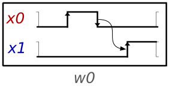
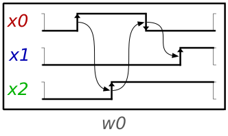
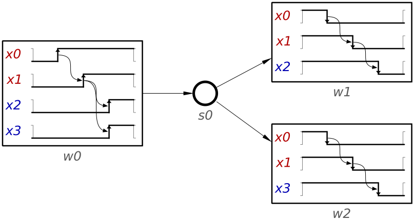

Design of synthesisable models
Like other models for asynchronous circuit design, WTG allows to express behaviours that cannot be synthesised without making timing assumptions. For example, it is possible to design a D Flip-Flop by using WTG, but it is necessary to make timing assumptions in the form of setup and hold times. Having this large expressiveness is valuable to allow the design of a wider range of models, but having timing assumptions precludes the design from being speed-independent (SI). In this page we discuss the main problems that you might encounter while designing WTG and propose a set of guidelines to avoid designing a model that cannot be synthesised as a SI circuit.
Irreducible conflicts
An irreducible conflict is a conflict between two states of the model that cannot be resolved without the introduction of timing assumptions. For example, consider the following waveform:

As you can see, the input signal x0 fires two times in a row and then it triggers the output signal x1. From the synthesis point of view, this represents an irreducible conflict: the encoding of signals before the rise transition of x0 is the same as the encoding after the fall of x0, yet, in the latter case, the signal x1 must fire. This presents a situation that cannot be distinguished in any circuit and therefore it cannot be synthesised.
Perhaps a more intuitive idea of the problem comes from trying to imagine how such a circuit could work. The model of the figure implies that our imaginary circuit must be able to detect a pulse of signal x0 and then fire x1. This seems simple enough until you consider that there are no timing assumptions in that model. According to the model, the circuit will have to detect a pulse of any duration; it should work for a pulse of 1ns all the same as for 1ps pulse, or even shorter. One can see that such a circuit cannot be realised in the real world.
Indeed, adding a timing assumption solves the problem. The following figure shows how such a timing assumption looks like:

In this case we added the internal signal x2 between the transitions of signal x0. This means that there is a state in our circuit that detects the rise edge of x0. After this detection is made, x0 can fire again. But note that the environment cannot observe internal signals. In practice, this means that this circuit will only work if x0 fires the second transition slower than our circuit can detect the pulse. In terms of synchronous design, this is a hold restriction.
Seeing this example already suggests how to design SI circuits: a transition for an input signal should always be acknowledged by an output signal. In the case of WTG, this means that at least one output transition should always fire between two transitions of the same input signal. For destabilise transitions, the duo destabilise-stabilise can be considered as a single transition. Yet keep in mind that a guard is also a stabilise transition and an output signal should fire between a guard and the next transition for the guarded signal.
Since it is not always obvious when this condition is followed, Workcraft has included a verification command to automatically check for it. You can access it by selecting Synthesis guidelines in the Verification menu.
Commutativity
Following the previous rule prevents most irreducible conflicts, but those can still occur by other mechanisms when there are choices. Consider the following figure:
In this case, the input signals x0 and x1 do not fire twice without an output in between. Even so, this figure shows another example of irreducible conflicts due to non-commutativity. Non-commutativity occurs when two traces that differ only in the ordering lead to completely different states. In our case, we can see that the first transitions after the choice are x0- in w1 (followed by x1-) and x1- in w2 (followed by x0-). This leads to x2- in w1 and to x3- in w2.
This again presents an irreducible conflict because the encoding after x1- in w1 is the same as the encoding after x0- in w2, yet the circuit must produce different outputs. The intuition can come again from considering how such a circuit would have to work. In this case, the circuit needs to know which transition comes first, x0- or x1-. Similar to the previous case, this means such a circuit would potentially need infinite time resolution, which is not possible in the real world.
Preventing these conflicts requires being careful when modelling choices. While not necessary, having an output as the second transition after a choice (note that an output cannot be the first transition after a choice) will avoid non-commutativity, as long as the previous guidelines are also followed. Otherwise, make sure the same transitions do not fire, in any pair of waveforms after a choice, before an output does.
Output determinacy
The last type of irreducible conflicts that we discuss here are also related to choices. Take a look at the following figure:

This example shows a non-output determinate WTG. The figure is very similar to the non-commutativity one, but in this case both waveforms have the input signals fire in the same order, yet they need to trigger a different behavior. An output determinate model ensures that two identical traces (sequences of transitions) must enable the same outputs. Violation of this condition leads to irreducible conflicts for similar reasons as the non-commutativity example, but the intuition is a bit different. In this case, the issue is that our fictitious circuit should know which output to fire, x2- or x3-, without any way to differentiate the decision that the environment transitions took in the choice.
Having these conflicts typically signals an error in the design itself. Avoid them by making sure you are not trying to express two different behaviors for the same inputs.